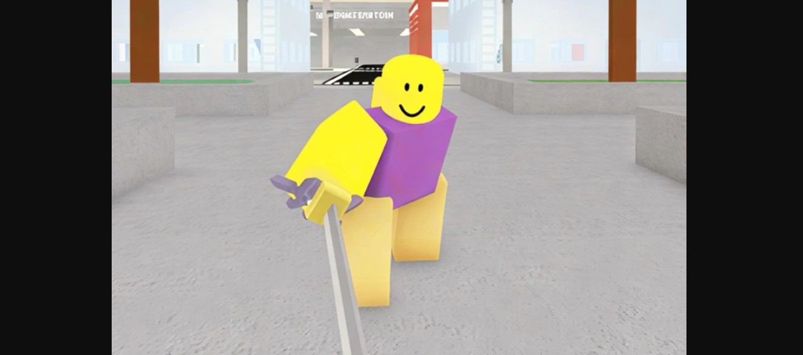
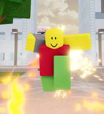
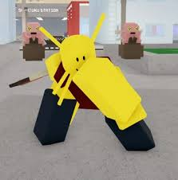
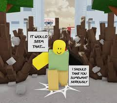
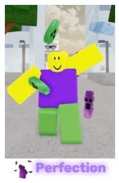
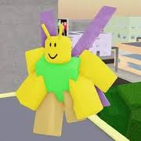
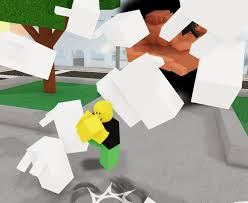
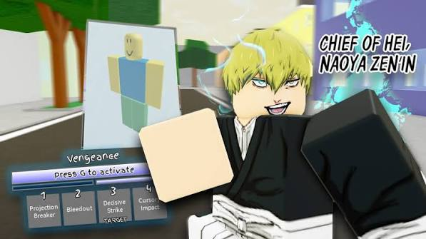

20 Lucky Coward (Haruta Shigemo)

O Haruta fica na última posição por ser um personagem extremamente difícil de se jogar. Além de ter pouca vida, ele depende totalmente da mecânica de milagres, que não é nada fácil de carregar. Acertar o counter até que é viável se você tiver um bom reflexo, mas o farp é praticamente impossível, e a sua ult é a que causa menos dano no jogo inteiro, é literalmente a pior ult de todas. Mas o dano base dele continua sendo muito baixo para o PvP. No fim das contas, a comunidade de 'main Haruta' se divide em três: os viciados que jogam de forma absurda, os corajosos que gostam do perigo, e os iniciantes que tentam imitar o que viram em algum vídeo. É inegável que jogar bem com ele é muito satisfatório, mas quando você joga mal, a vontade de arremessar o celular ou o PC pela janela é real.
19 Puppet Master (Ultimate Mechamaru)

Já o Mechamaru é um outro personagem cujas skills base são bem mais ou menos, mas ele não é muito ruim não. O seu "R" e sua ult são até que bem divertidos de se usar, o seu "R" invoca um ou dois bonequinhos que podem usar suas abilidades base e dá para fazer uma artilharia com a sua terceira skill e com o "R" e a sua ULT, Cara, a ULT, você vira simplesmente um ROBÔ GIGANTE, e ainda dá para usar emotes normalmente! Mas de resto, ele é bem esquivável, tadinho dele.
18 Black Death (Kurourushi)

O kourorushi é um personagem bem legal de se usar por causa da sua mecanica de clogem que é bem legal e divertida de se usar, mas o unico problema é que ele está bem fraco por causa de tanto nerf que o Tze deu nele umas duas horas depois do seu lançamento por que ele estáva BEM quebrado de tanto clone e forte que ele estáva,hoje em dia ele está até que ok,mas o Kurourushi está bem mais facil de lutar contra.as skills do kourorushi são eté que simples não e mecanica tão roubada e complexa assim,o mais complexo do personagen é o "R" que são aquelas moscas mas não nada de mais.resumindo, o kourorushi é um personagen fraco mas devemos reconhecer a sua força,principalmente no seu lançamento.
17 Disaster Plants (Hanami)

Como está em Acesso Antecipado, o moveset da Hanami ainda carece de ajustes finos. O poder de controlar as raízes e flores é interessante e muito divertido,e o tres delá rouba a evasiva que dá para fazer combos mais extensos e longos que podem dar muito dano.
16 Perfection (Mahito)

o Mahito é até que bem OK por se diser por que o seu moveset base ser até que simples, e o legal do mahito é o seu "R" que faz o seus braços mudaren de forma e consequentemente muda o seu "3" o dash e o seu combo de M1 dando mais para fazer combos mais variados,mas seu problema é a lentidão de alguns ataque que só com um evasiva pode fazer você perder pelo menos metade do seu HP.
15 Locust Guy (Gafanhoto Amaldiçoado)

O famoso Gafanhoto(ou grilo para os mais intimos) é um personagem focado em pura agressividade física e socos rápidos. Bom ele é um personagens que seus mais são muito gente boa e divertidos,mas falando do personagen em si, o seu combos, a maioria tem que usar o seu "R" que dá para escapar até que bem facilmente,e isso é um problema.
14 Ten Shadows (Megumi Fushiguro)

O Megumi no seu moveset base é bem simples e bem lento sem considerar as sua variações.se for contar as suas variações ele se torna de 1 para 1.5, ou seja quase nada por que ele é muito span, e seus mains quase tem abilidade com outos personagem sem spamar as abilidades.
13 Head of the Hei (Naoya Zen'in)

O Naoya é o mestre da velocidade. Em consegue se mover pelo mapa de forma absurda e confundir os oponentes. O problema é que o dano de suas habilidades individuais é relativamente baixo, exigindo que você tem que sempre tentar fazer combos sem errar para não virar vidro para finalizar um inimigo,e tem tres tipos de mains de naoya, o que é bom e gente boa,o bom que é toxico e tem o ruim.
12 Aspiring Mangaka (Charles Bernard)
O Mangaka usa sua caneta gigante para prever os movimentos e atacar de média distância. É um boneco sólido com um combo básico decente, mas que exige muita precisão no posicionamento para não ser punido por personagens hiper-agressivos.
11 Crow Charmer (Mei Mei)
A Mei Mei se destaca pelo uso excelente de seus corvos para zonear o mapa e causar dano contínuo à distância, além de golpes fortes com o machado. Ela dita o ritmo da luta, mas sofre se for encurralada contra a parede.
10 Star Rage (Yuki Tsukumo)
Entrando no Top 10, a Yuki tem um dos socos mais pesados do jogo graças à mecânica de massa. Seus golpes quebram a guarda facilmente e causam um estrago imenso. Ela só perde posições pela lentidão em fechar os combos depois de errar o golpe inicial.
9 Salaryman (Kento Nanami)
O Nanami é o mestre dos acertos críticos na proporção 7:3. Se você dominar o tempo exato das habilidades dele, o dano é avassalador. É um personagem cirúrgico, muito equilibrado e confiável para qualquer partida competitiva.
8 Cursed Partners (Yuta Okkotsu & Rika)
O Yuta tem um alcance formidável com a espada e uma excelente mobilidade. Quando a Rika entra em ação para estender os combos ou defendê-lo, ele se torna um pesadelo. Um personagem completíssimo.
7 True Cannon (Ryu Ishigori)
O Ryu é focado em rajadas de energia colossais. O dano do seu canhão de feixes limpa barras de vida inteiras e o alcance cobre quase o mapa todo. Excelente para causar caos, tanto em duelos quanto em servidores públicos cheios.
6 Blood Manipulator (Choso)
Quase no Top 5, o Choso tem um dos melhores controles de média e longa distância do jogo através da manipulação de sangue (como a Supernova e Piercing Blood). Ele consegue punir oponentes de longe e emendar combos aéreos com facilidade.
5 Switcher (Aoi Todo)
O Todo é o rei da mente no PvP. A mecânica do Boogie Woogie permite trocar de lugar com o oponente ou objetos, quebrando completamente a sequência de ataque do inimigo. É o contra-ataque perfeito e um dos personagens mais inteligentes de se jogar.
4 Honored One (Satoru Gojo)
Gojo oferece um kit absurdo de ferramentas. Com o Vazio Roxo (Purple), Azul, Vermelho e o teletransporte, ele domina todas as distâncias. Seu Despertar com a Expansão de Domínio é um nocaute quase garantido se pegar o oponente sem recursos.
3 Restless Gambler (Kinji Hakari)
Abrindo o pódio em terceiro lugar, o Hakari é o ápice da sobrevivência. O seu moveset base é rápido e focado em artes marciais agressivas, mas o verdadeiro brilho está no seu Despertar: se você tirar a sorte grande no Jackpot, você ganha regeneração passiva imortal, permitindo cometer erros e continuar pressionando sem parar.
2 Defense Attorney (Hiromi Higuruma)
O Higuruma ocupa a segunda posição porque ele quebra as regras do jogo. A mecânica de abrir o tribunal e julgar o oponente pode confiscar temporariamente o moveset ou as habilidades do inimigo. Lutar contra um Higuruma sem poder usar suas próprias skills é uma das experiências mais desesperadoras do jogo.
1 Vessel (Yuji Itadori)
O grande campeão da lista. O Yuji possui o moveset base mais consistente, fluido e devastador para emendar combos estendidos (especialmente usando o Punho Divergente e o Black Flash). Para completar, o seu Despertar traz o Sukuna, que possui os ataques de corte mais fortes do meta e uma Expansão de Domínio que derrete a vida de múltiplos alvos ao mesmo tempo. É o personagem mais sólido do jogo.